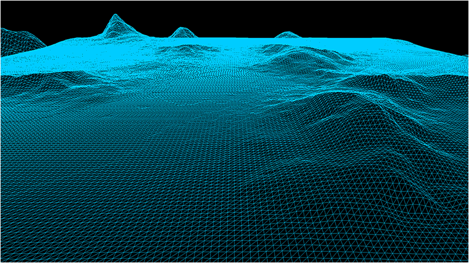
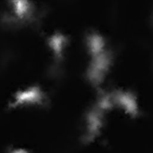

This tutorial will cover how to implement bitmap height maps for representing terrain in 3D using OpenGL 4.0 and C++.
The code in this tutorial will be based on the previous terrain tutorial.
For this tutorial we will replace the last tutorial's grid code with new height map code.
The code will be changed to read in the bitmap height map and then elevate each point on the grid so that it matches the height map elevations.
It will then produce the following 3D terrain:

Height maps are a mapping of height points usually stored in an image file.
One of the common methods for storing height maps is using the bitmap file format and storing the height of the terrain in each pixel using a value
from 0-255 (with 0 being the lowest height of the terrain and 255 being the maximum height).
Grey scale bitmaps lend themselves well to representing terrain since you can use the intensity of the grey color to represent the height.
This also makes them very easy to edit and manipulate with painting programs or mathematical algorithms.
For this tutorial we will use the following bitmap height map:

To generate your own height maps there are a number of terrain generation programs that are available such as World Machine and Terragen.
You can also use noise filters available in many painting programs such as Photoshop and GIMP to create height maps.
And finally you can write your own height map generator using algorithms such as Perlin Noise to produce fairly realistic terrain.
Setup.txt
One of the first changes for this tutorial is that we now initialize our terrain using a text file named setup.txt.
This file will contain all of the parameters needed to generate our terrain.
At first it will only contain the filename, dimensions, and height scaling value.
However this will evolve to contain more information as the terrain becomes more elaborate in the future tutorials.
Terrain Filename: ../Engine/data/heightmap.bmp
Terrain Height: 257
Terrain Width: 257
Terrain Scaling: 12.0
The reason we use these files is so that we don't need to hard code any of this information in our programs.
It allows us, as well as other people you are working with, to quickly make changes and see the output without requiring a re-compile of the software.
All they need to do is edit the text file and re-run the executable.
In the software industry this is called data driven design.
Terrainclass.h
The TerrainClass has had a number of modifications to it so that it now supports bitmap height maps.
////////////////////////////////////////////////////////////////////////////////
// Filename: terrainclass.h
////////////////////////////////////////////////////////////////////////////////
#ifndef _TERRAINCLASS_H_
#define _TERRAINCLASS_H_
We have included some libraries in the TerrainClass for handling file reading for us.
//////////////
// INCLUDES //
//////////////
#include <fstream>
using namespace std;
///////////////////////
// MY CLASS INCLUDES //
///////////////////////
#include "openglclass.h"
#include "shadermanagerclass.h"
////////////////////////////////////////////////////////////////////////////////
// Class name: TerrainClass
////////////////////////////////////////////////////////////////////////////////
class TerrainClass
{
private:
struct VertexType
{
float x, y, z;
float r, g, b;
};
We also have a couple new structures for the height map and for the 3D terrain model we will build from the height map.
struct HeightMapType
{
float x, y, z;
};
struct ModelType
{
float x, y, z;
};
public:
TerrainClass();
TerrainClass(const TerrainClass&);
~TerrainClass();
bool Initialize(OpenGLClass*, char*);
void Shutdown(OpenGLClass*);
bool Render(OpenGLClass*, ShaderManagerClass*, float*, float*, float*);
private:
We have a number of new private functions for loading and releasing the bitmap height map as well as the 3D terrain model.
bool LoadSetupFile(char*, char*, float&);
bool LoadBitmapHeightMap(char*);
void SetTerrainCoordinates(float);
void BuildTerrainModel();
void ReleaseHeightMap();
void ReleaseTerrainModel();
bool InitializeBuffers(OpenGLClass*);
void ShutdownBuffers(OpenGLClass*);
void RenderBuffers(OpenGLClass*);
private:
int m_vertexCount, m_indexCount;
unsigned int m_vertexArrayId, m_vertexBufferId, m_indexBufferId;
There are also new private variables for the terrain dimensions, the bitmap map file name, the height map array, and the 3D terrain model array.
int m_terrainHeight, m_terrainWidth;
HeightMapType* m_heightMap;
ModelType* m_terrainModel;
};
#endif
Terrainclass.cpp
///////////////////////////////////////////////////////////////////////////////
// Filename: terrainclass.cpp
///////////////////////////////////////////////////////////////////////////////
#include "terrainclass.h"
In the class constructor we initialize all the new private pointer variables to null.
TerrainClass::TerrainClass()
{
m_heightMap = 0;
m_terrainModel = 0;
}
TerrainClass::TerrainClass(const TerrainClass& other)
{
}
TerrainClass::~TerrainClass()
{
}
We have changed the Initialize function quite a bit.
In the previous tutorial all we did was call InitializeBuffers to build our terrain grid.
But now that we are building a 3D terrain from a bitmap height map file it will have a number of extra steps.
The first thing to note is that the function now takes as input a setupFilename string.
We are making the TerrainClass data driven, so we read in a setup file and build the terrain according to the data in that file.
The first function we call is LoadSetupFile which reads that setup.txt file and gets the file name, terrain dimensions, and height scaling.
The next function is LoadBitmapHeightMap which will open the bitmap file and load the pixel height data into the height map array.
After that we call SetTerrainCoordinates to set the correct X and Z coordinates and scale the height of the terrain.
Once those functions are done we can call BuildTerrainModel which takes the height map array we filled out and builds a proper 3D terrain model from that data.
After building the terrain model we call ShutdownHeightMap to release the height map array.
Then we call InitializeBuffers which loads the vertex and index buffer for rendering with the 3D terrain model instead of the line grid from the previous tutorial.
And once all that is done we call ShutdownTerrainModel to release the 3D terrain model memory since we have the data in the rendering buffers.
bool TerrainClass::Initialize(OpenGLClass* OpenGL, char* setupFilename)
{
char terrainFilename[256];
float heightScale;
bool result;
// Get the terrain filename, dimensions, and so forth from the setup file.
result = LoadSetupFile(setupFilename, terrainFilename, heightScale);
if(!result)
{
return false;
}
// Initialize the terrain height map with the data from the bitmap file.
result = LoadBitmapHeightMap(terrainFilename);
if(!result)
{
return false;
}
// Setup the X and Z coordinates for the height map as well as scale the terrain height by the height scale value.
SetTerrainCoordinates(heightScale);
// Now build the 3D model of the terrain.
BuildTerrainModel();
// We can now release the height map since it is no longer needed in memory once the 3D terrain model has been built.
ReleaseHeightMap();
// Initialize the vertex and index buffer that hold the geometry for the terrain.
result = InitializeBuffers(OpenGL);
if(!result)
{
return false;
}
// Release the terrain model now that the rendering buffers have been loaded.
ReleaseTerrainModel();
return true;
}
void TerrainClass::Shutdown(OpenGLClass* OpenGL)
{
// Release the vertex and index buffers.
ShutdownBuffers(OpenGL);
return;
}
bool TerrainClass::Render(OpenGLClass* OpenGL, ShaderManagerClass* ShaderManager, float* worldMatrix, float* viewMatrix, float* projectionMatrix)
{
bool result, wireFrame;
We will render in wireframe mode for this tutorial to clearly see the triangles making up the terrain.
// Set wireframe mode on.
wireFrame = true;
// Enable wireframe mode to see triangles composing the terrain clearly.
if(wireFrame)
{
OpenGL->EnableWireframe();
}
// Set the terrain shader as the current shader program and set the matrices that it will use for rendering.
result = ShaderManager->RenderTerrainShader(worldMatrix, viewMatrix, projectionMatrix);
if(!result)
{
return false;
}
// Put the vertex and index buffers on the graphics pipeline to prepare them for drawing.
RenderBuffers(OpenGL);
// Disable wireframe mode after rendering terrain.
if(wireFrame)
{
OpenGL->DisableWireframe();
}
return true;
}
LoadSetupFile is a new function that takes in the setup.txt file and retrieves all the values so that we can construct the terrain based on what is in that file.
For now we are just reading in the bitmap height map file name, the terrain width and height, as well as the terrain height scaling value.
bool TerrainClass::LoadSetupFile(char* filename, char* terrainFilename, float& heightScale)
{
ifstream fin;
char input;
// Open the setup file. If it could not open the file then exit.
fin.open(filename);
if(fin.fail())
{
return false;
}
// Read up to the terrain file name.
fin.get(input);
while(input != ':')
{
fin.get(input);
}
// Read in the terrain file name.
fin >> terrainFilename;
// Read up to the value of terrain height.
fin.get(input);
while(input != ':')
{
fin.get(input);
}
// Read in the terrain height.
fin >> m_terrainHeight;
// Read up to the value of terrain width.
fin.get(input);
while(input != ':')
{
fin.get(input);
}
// Read in the terrain width.
fin >> m_terrainWidth;
// Read up to the value of terrain height scaling.
fin.get(input);
while(input != ':')
{
fin.get(input);
}
// Read in the terrain height scaling.
fin >> heightScale;
// Close the setup file.
fin.close();
return true;
}
LoadBitmapHeightMap is a new function that loads the bitmap file containing the height map into the new height map array.
Note that the bitmap format contains red, green, and blue colors.
But since this being treated like a grey scale image you can read either the red, green, or blue color as they will all be the same grey value and you only need one of them.
Also note that we use a 257x257 bitmap because we need an odd number of points to build an even number of quads.
And finally the bitmap format stores the image upside down.
And because of this we first need to read the data into an array, and then copy that array into the height map from the bottom up.
bool TerrainClass::LoadBitmapHeightMap(char* terrainFilename)
{
FILE* filePtr;
unsigned char* bitmapImage;
unsigned char fileHeader[54];
unsigned long count;
int height, width, imageSize, i, j, k, index, error;
unsigned char pixelHeight;
// Start by creating the array structure to hold the height map data.
m_heightMap = new HeightMapType[m_terrainWidth * m_terrainHeight];
// Open the bitmap map file in binary.
filePtr = fopen(terrainFilename, "rb");
if(filePtr == NULL)
{
return false;
}
// Read in the bitmap file header which is 54 bytes.
count = fread(fileHeader, sizeof(unsigned char), 54, filePtr);
if(count != 54)
{
return false;
}
// Get the width and height integers from the unsigned char header data.
height = (int)fileHeader[23];
height <<= 8;
height += (int)fileHeader[22];
width = (int)fileHeader[19];
width <<= 8;
width += (int)fileHeader[18];
// Make sure the height map dimensions are the same as the terrain dimensions for easy 1 to 1 mapping.
if((height != m_terrainHeight) || (width != m_terrainWidth))
{
return false;
}
// Calculate the size of the bitmap image data.
// Since we use non-divide by 2 dimensions (eg. 257x257) we need to add an extra byte to each line.
imageSize = m_terrainHeight * ((m_terrainWidth * 3) + 1);
// Allocate memory for the bitmap image data.
bitmapImage = new unsigned char[imageSize];
// Read in the bitmap image data.
count = fread(bitmapImage, 1, imageSize, filePtr);
if(count != imageSize)
{
return false;
}
// Close the file.
error = fclose(filePtr);
if(error != 0)
{
return false;
}
// Initialize the position in the image data buffer.
k=0;
// Read the image data into the height map array.
for(j=0; j<m_terrainHeight; j++)
{
for(i=0; i<m_terrainWidth; i++)
{
// Bitmaps are upside down so load bottom to top into the height map array.
index = (m_terrainWidth * (m_terrainHeight - 1 - j)) + i;
// Get the grey scale pixel value from the bitmap image data at this location.
pixelHeight = bitmapImage[k];
// Store the pixel value as the height at this point in the height map array.
m_heightMap[index].y = (float)pixelHeight;
// Increment the bitmap image data index.
k+=3;
}
// Compensate for the extra byte at end of each line in non-divide by 2 bitmaps (eg. 257x257).
k++;
}
// Release the bitmap image data now that the height map array has been loaded.
delete [] bitmapImage;
bitmapImage = 0;
return true;
}
The SetTerrainCoordinates function is called after we have loaded the bitmap height map into the height map array.
Since we only read in the height as the Y coordinate we still need to fill out the X and Z coordinates using the for loop.
Once that is done we also need to move the Z coordinate into the positive range.
And finally we scale the height of the height map by the m_heightScale value.
Currently the height scale in the setup.txt file is 12.0f, but you can modify that value to limit or expand the height of the terrain.
void TerrainClass::SetTerrainCoordinates(float heightScale)
{
int i, j, index;
// Loop through all the elements in the height map array and adjust their coordinates correctly.
for(j=0; j<m_terrainHeight; j++)
{
for(i=0; i<m_terrainWidth; i++)
{
index = (m_terrainWidth * j) + i;
// Set the X and Z coordinates.
m_heightMap[index].x = (float)i;
m_heightMap[index].z = -(float)j;
// Move the terrain depth into the positive range. For example from (0, -256) to (256, 0).
m_heightMap[index].z += (float)(m_terrainHeight - 1);
// Scale the height.
m_heightMap[index].y /= heightScale;
}
}
return;
}
BuildTerrainModel is the function that takes the points in the height map array and creates a 3D polygon mesh from them.
It loops through the height map array and grabs four points at a time and creates two triangles for those four points.
The final 3D terrain model is stored in the m_terrainModel array.
void TerrainClass::BuildTerrainModel()
{
int vertexCount, i, j, index, index1, index2, index3, index4;
// Calculate the number of vertices in the 3D terrain model.
vertexCount = (m_terrainHeight - 1) * (m_terrainWidth - 1) * 6;
// Create the 3D terrain model array.
m_terrainModel = new ModelType[vertexCount];
// Initialize the index into the height map array.
index = 0;
// Load the 3D terrain model with the height map terrain data.
// We will be creating 2 triangles for each of the four points in a quad.
for(j=0; j<(m_terrainHeight-1); j++)
{
for(i=0; i<(m_terrainWidth-1); i++)
{
// Get the indexes to the four points of the quad.
index1 = (m_terrainWidth * j) + i; // Upper left.
index2 = (m_terrainWidth * j) + (i+1); // Upper right.
index3 = (m_terrainWidth * (j+1)) + i; // Bottom left.
index4 = (m_terrainWidth * (j+1)) + (i+1); // Bottom right.
// Now create two triangles for that quad.
// Triangle 1 - Upper left.
m_terrainModel[index].x = m_heightMap[index1].x;
m_terrainModel[index].y = m_heightMap[index1].y;
m_terrainModel[index].z = m_heightMap[index1].z;
index++;
// Triangle 1 - Upper right.
m_terrainModel[index].x = m_heightMap[index2].x;
m_terrainModel[index].y = m_heightMap[index2].y;
m_terrainModel[index].z = m_heightMap[index2].z;
index++;
// Triangle 1 - Bottom left.
m_terrainModel[index].x = m_heightMap[index3].x;
m_terrainModel[index].y = m_heightMap[index3].y;
m_terrainModel[index].z = m_heightMap[index3].z;
index++;
// Triangle 2 - Bottom left.
m_terrainModel[index].x = m_heightMap[index3].x;
m_terrainModel[index].y = m_heightMap[index3].y;
m_terrainModel[index].z = m_heightMap[index3].z;
index++;
// Triangle 2 - Upper right.
m_terrainModel[index].x = m_heightMap[index2].x;
m_terrainModel[index].y = m_heightMap[index2].y;
m_terrainModel[index].z = m_heightMap[index2].z;
index++;
// Triangle 2 - Bottom right.
m_terrainModel[index].x = m_heightMap[index4].x;
m_terrainModel[index].y = m_heightMap[index4].y;
m_terrainModel[index].z = m_heightMap[index4].z;
index++;
}
}
return;
}
We also have a new function to release the height map that was created in the LoadBitmapHeightMap function.
void TerrainClass::ReleaseHeightMap()
{
// Release the height map array.
if(m_heightMap)
{
delete [] m_heightMap;
m_heightMap = 0;
}
return;
}
The ReleaseTerrainModel function is used to release the terrain model array that was created in the BuildTerrainModel function.
void TerrainClass::ReleaseTerrainModel()
{
// Release the terrain model data.
if(m_terrainModel)
{
delete [] m_terrainModel;
m_terrainModel = 0;
}
return;
}
The InitializeBuffers function is a bit simpler in this tutorial since all we need to do is copy the 3D terrain model into the vertex/index arrays and then create the
vertex and index buffers from that data.
We also no longer set the size of the terrain in here as we read that in from the setup.txt file now.
bool TerrainClass::InitializeBuffers(OpenGLClass* OpenGL)
{
VertexType* vertices;
unsigned int* indices;
int i;
float red, green, blue;
// Set the color of the terrain grid.
red = 0.0f;
green = 0.8f;
blue = 1.0f;
// Calculate the number of vertices in the terrain.
m_vertexCount = (m_terrainHeight - 1) * (m_terrainWidth - 1) * 6;
// Set the index count to the same as the vertex count.
m_indexCount = m_vertexCount;
// Create the vertex array.
vertices = new VertexType[m_vertexCount];
// Create the index array.
indices = new unsigned int[m_indexCount];
// Load the vertex array and index array with 3D terrain model data.
for(i=0; i<m_vertexCount; i++)
{
vertices[i].x = m_terrainModel[i].x;
vertices[i].y = m_terrainModel[i].y;
vertices[i].z = m_terrainModel[i].z;
vertices[i].r = red;
vertices[i].g = green;
vertices[i].b = blue;
indices[i] = i;
}
// Allocate an OpenGL vertex array object.
OpenGL->glGenVertexArrays(1, &m_vertexArrayId);
// Bind the vertex array object to store all the buffers and vertex attributes we create here.
OpenGL->glBindVertexArray(m_vertexArrayId);
// Generate an ID for the vertex buffer.
OpenGL->glGenBuffers(1, &m_vertexBufferId);
// Bind the vertex buffer and load the vertex (position and color) data into the vertex buffer.
OpenGL->glBindBuffer(GL_ARRAY_BUFFER, m_vertexBufferId);
OpenGL->glBufferData(GL_ARRAY_BUFFER, m_vertexCount * sizeof(VertexType), vertices, GL_STATIC_DRAW);
// Enable the two vertex array attributes.
OpenGL->glEnableVertexAttribArray(0); // Vertex position.
OpenGL->glEnableVertexAttribArray(1); // Vertex color.
// Specify the location and format of the position portion of the vertex buffer.
OpenGL->glVertexAttribPointer(0, 3, GL_FLOAT, false, sizeof(VertexType), 0);
// Specify the location and format of the color portion of the vertex buffer.
OpenGL->glVertexAttribPointer(1, 3, GL_FLOAT, false, sizeof(VertexType), (unsigned char*)NULL + (3 * sizeof(float)));
// Generate an ID for the index buffer.
OpenGL->glGenBuffers(1, &m_indexBufferId);
// Bind the index buffer and load the index data into it.
OpenGL->glBindBuffer(GL_ELEMENT_ARRAY_BUFFER, m_indexBufferId);
OpenGL->glBufferData(GL_ELEMENT_ARRAY_BUFFER, m_indexCount* sizeof(unsigned int), indices, GL_STATIC_DRAW);
// Now that the buffers have been loaded we can release the array data.
delete [] vertices;
vertices = 0;
delete [] indices;
indices = 0;
return true;
}
void TerrainClass::ShutdownBuffers(OpenGLClass* OpenGL)
{
// Release the vertex array object.
OpenGL->glBindVertexArray(0);
OpenGL->glDeleteVertexArrays(1, &m_vertexArrayId);
// Release the vertex buffer.
OpenGL->glBindBuffer(GL_ARRAY_BUFFER, 0);
OpenGL->glDeleteBuffers(1, &m_vertexBufferId);
// Release the index buffer.
OpenGL->glBindBuffer(GL_ELEMENT_ARRAY_BUFFER, 0);
OpenGL->glDeleteBuffers(1, &m_indexBufferId);
return;
}
RenderBuffers now renders triangles instead of line lists.
void TerrainClass::RenderBuffers(OpenGLClass* OpenGL)
{
// Bind the vertex array object that stored all the information about the vertex and index buffers.
OpenGL->glBindVertexArray(m_vertexArrayId);
// Render the vertex buffer as triangles using the index buffer.
glDrawElements(GL_TRIANGLES, m_indexCount, GL_UNSIGNED_INT, 0);
return;
}
Zoneclass.h
The ZoneClass has only been slightly modified for this tutorial to support loading from the setup.txt file and rendering in wireframe mode.
///////////////////////////////////////////////////////////////////////////////
// Filename: zoneclass.h
///////////////////////////////////////////////////////////////////////////////
#ifndef _ZONECLASS_H_
#define _ZONECLASS_H_
///////////////////////
// MY CLASS INCLUDES //
///////////////////////
#include "openglclass.h"
#include "inputclass.h"
#include "userinterfaceclass.h"
#include "cameraclass.h"
#include "positionclass.h"
#include "terrainclass.h"
////////////////////////////////////////////////////////////////////////////////
// Class name: ZoneClass
////////////////////////////////////////////////////////////////////////////////
class ZoneClass
{
public:
ZoneClass();
ZoneClass(const ZoneClass&);
~ZoneClass();
bool Initialize(OpenGLClass*);
void Shutdown(OpenGLClass*);
bool Frame(OpenGLClass*, ShaderManagerClass*, FontClass*, UserInterfaceClass*, InputClass*, float);
private:
bool Render(OpenGLClass*, ShaderManagerClass*, FontClass*, UserInterfaceClass*);
void HandleMovementInput(InputClass*, float);
private:
CameraClass* m_Camera;
PositionClass* m_Position;
TerrainClass* m_Terrain;
};
#endif
Zoneclass.cpp
////////////////////////////////////////////////////////////////////////////////
// Filename: zoneclass.cpp
////////////////////////////////////////////////////////////////////////////////
#include "zoneclass.h"
ZoneClass::ZoneClass()
{
m_Camera = 0;
m_Position = 0;
m_Terrain = 0;
}
ZoneClass::ZoneClass(const ZoneClass& other)
{
}
ZoneClass::~ZoneClass()
{
}
bool ZoneClass::Initialize(OpenGLClass* OpenGL)
{
char configFilename[256];
bool result;
// Create and initialize the camera object.
m_Camera = new CameraClass;
m_Camera->SetPosition(0.0f, 0.0f, -10.0f);
m_Camera->Render();
m_Camera->RenderBaseViewMatrix();
// Create and initialize the position object.
m_Position = new PositionClass;
m_Position->SetPosition(128.0f, 10.0f, -10.0f);
m_Position->SetRotation(0.0f, 0.0f, 0.0f);
// Create and initialize the terrain object.
m_Terrain = new TerrainClass;
We now load the terrain based on the contents of the setup.txt file.
strcpy(configFilename, "../Engine/data/setup.txt");
result = m_Terrain->Initialize(OpenGL, configFilename);
if(!result)
{
cout << "Error: Could not initialize the terrain object." << endl;
return false;
}
return true;
}
void ZoneClass::Shutdown(OpenGLClass* OpenGL)
{
// Release the terrain object.
if(m_Terrain)
{
m_Terrain->Shutdown(OpenGL);
delete m_Terrain;
m_Terrain = 0;
}
// Release the position object.
if(m_Position)
{
delete m_Position;
m_Position = 0;
}
// Release the camera object.
if(m_Camera)
{
delete m_Camera;
m_Camera = 0;
}
return;
}
bool ZoneClass::Frame(OpenGLClass* OpenGL, ShaderManagerClass* ShaderManager, FontClass* Font, UserInterfaceClass* UserInterface, InputClass* Input, float frameTime)
{
float posX, posY, posZ, rotX, rotY, rotZ;
bool result;
// Do the frame input processing for the movement.
HandleMovementInput(Input, frameTime);
// Get the view point position/rotation.
m_Position->GetPosition(posX, posY, posZ);
m_Position->GetRotation(rotX, rotY, rotZ);
// Update the UI with the position.
UserInterface->UpdatePositonStrings(Font, posX, posY, posZ, rotX, rotY, rotZ);
// Render the zone.
result = Render(OpenGL, ShaderManager, Font, UserInterface);
if(!result)
{
return false;
}
return true;
}
bool ZoneClass::Render(OpenGLClass* OpenGL, ShaderManagerClass* ShaderManager, FontClass* Font, UserInterfaceClass* UserInterface)
{
float worldMatrix[16], viewMatrix[16], projectionMatrix[16], baseViewMatrix[16], orthoMatrix[16];
bool result;
// Get the world, view, and ortho matrices from the opengl and camera objects.
OpenGL->GetWorldMatrix(worldMatrix);
m_Camera->GetViewMatrix(viewMatrix);
OpenGL->GetProjectionMatrix(projectionMatrix);
m_Camera->GetBaseViewMatrix(baseViewMatrix);
OpenGL->GetOrthoMatrix(orthoMatrix);
// Clear the scene.
OpenGL->BeginScene(0.0f, 0.0f, 0.0f, 1.0f);
// Render the terrain using the terrain shader.
result = m_Terrain->Render(OpenGL, ShaderManager, worldMatrix, viewMatrix, projectionMatrix);
if(!result)
{
return false;
}
// Render the user interface.
result = UserInterface->Render(OpenGL, ShaderManager, Font, worldMatrix, baseViewMatrix, orthoMatrix);
if(!result)
{
return false;
}
// Present the rendered scene to the screen.
OpenGL->EndScene();
return true;
}
void ZoneClass::HandleMovementInput(InputClass* Input, float frameTime)
{
float posX, posY, posZ, rotX, rotY, rotZ;
bool keyDown;
// Set the frame time for calculating the updated position.
m_Position->SetFrameTime(frameTime);
// Check if the input keys have been pressed. If so, then update the position accordingly.
keyDown = Input->IsLeftPressed();
m_Position->TurnLeft(keyDown);
keyDown = Input->IsRightPressed();
m_Position->TurnRight(keyDown);
keyDown = Input->IsUpPressed();
m_Position->MoveForward(keyDown);
keyDown = Input->IsDownPressed();
m_Position->MoveBackward(keyDown);
keyDown = Input->IsAPressed();
m_Position->MoveUpward(keyDown);
keyDown = Input->IsZPressed();
m_Position->MoveDownward(keyDown);
keyDown = Input->IsPgUpPressed();
m_Position->LookUpward(keyDown);
keyDown = Input->IsPgDownPressed();
m_Position->LookDownward(keyDown);
// Get the view point position/rotation.
m_Position->GetPosition(posX, posY, posZ);
m_Position->GetRotation(rotX, rotY, rotZ);
// Set the position of the camera.
m_Camera->SetPosition(posX, posY, posZ);
m_Camera->SetRotation(rotX, rotY, rotZ);
// Update the camera view matrix for rendering.
m_Camera->Render();
return;
}
Summary
We now have the ability to load in height maps and move around the height map based terrain in 3D.
To Do Exercises
1. Recompile the code and use the input keys to move around the terrain.
2. Create your own grey scale bitmap and load it into the terrain engine to see the height map in 3D.
3. Disable the wireframe mode to see the solid color terrain rendered.
Source Code
Source Code and Data Files: gl4terlinux02.tar.gz